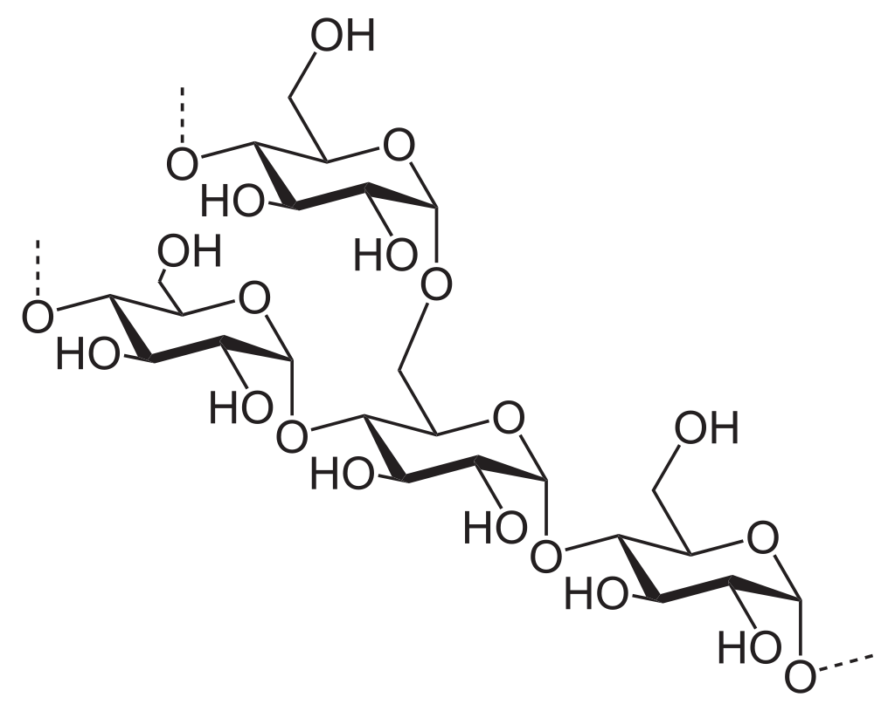
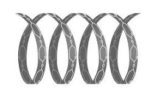
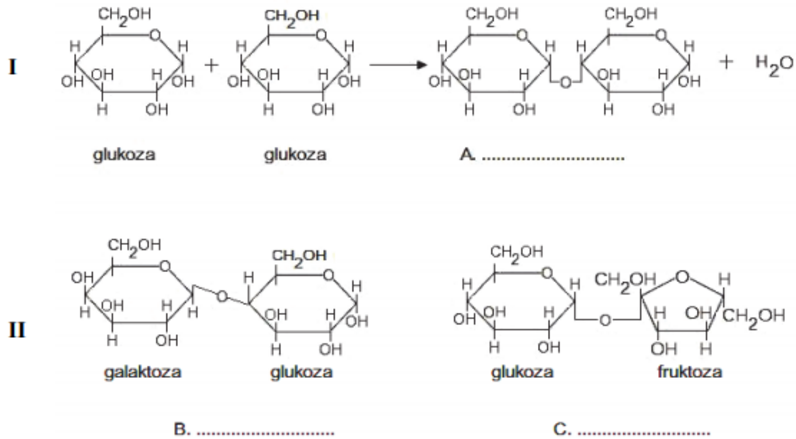

1. Uzupełnij zdania: (3 pkt.)
Środowisko przyrodnicze, a przede wszystkim królewstwo roślin, jest pełne
.
jest materiałem budulcowym i głównym składnikiem ścian komórkowych roślin.
Z kolei
służy jako materiał zapasowy. Występuje głównie w korzeniach, bulwach, a także w nasionach i owocach.
2. Co to są polisacharydy? (3 pkt.)
3. Jak są zbudowane polisacharydy? (3 pkt.)
Polisacharydy zawierają w cząsteczce grupy
oraz
. Reszty mogą być
. Najczęściej w przyrodzie polisacharydy - skrobia i celuloza - składają się wyłącznie z połączonych na różne sposoby reszt glukozowych.
4. Jaki jest wzór ogólny polisacharydów? (3 pkt.)
5. Jak jest zbudowana cząsteczka celulozy? (4 pkt.)
Cząsteczka celulozy jest zbudowana z długich nierozgałęcionych łańcuchów reszt
połączonych wiązaniami
.
6. Napisz albo chemiczną reakcję albo nazwę cukru: (5 pkt.)
(C6H10O5)n + nH2O (HCl lub enzymy i hydroliza) →
7. Jak są zbudowana cząsteczka skrobi? (6 pkt.)
Cząsteczka skrobi jest mieszniną dwóch polisacharydów:
i
.




8. Uporządkuj nazwy fragmentów do ich zdjęć: (6 pkt.)
A: Fragment cząsteczki amylozy
B: Fragment cząsteczki amylopektyny
C: Fragment łańcucha celulozy
B: Fragment cząsteczki amylopektyny
C: Fragment łańcucha celulozy

9. Uzupełnij tabelę: (8 pkt.)
Porównanie budowy cząsteczek
| Nazwa związku chemicznego | Jednostka strukturalna | Wiązania między resztami monosacharydu | Budowa cząsteczek | Czy jest trawiona w organizmie człowieka |
| Skrobia | ||||
| Celuloza |
10. Zadanie: (9 pkt.)
Wśród węglowodanów, w zależności od ich budowy, wyróżnia się monosacharydy – pojedyncze monomery, które mogą tworzyć większe cząsteczki: oligosacharydy (2–10 monomerów), oraz polisacharydy, zbudowane z więcej niż 10 monomerów. Na schemacie I przedstawiono reakcję kondensacji dwóch cząsteczek glukozy (monomeru), w wyniku której powstaje disacharyd, a na schemacie II – dwa disacharydy, z których każdy zbudowany z dwóch różnych monomerów.

Między dwiema cząsteczkami glukozy podczas reakcji kondensacji powstało wiązanie: